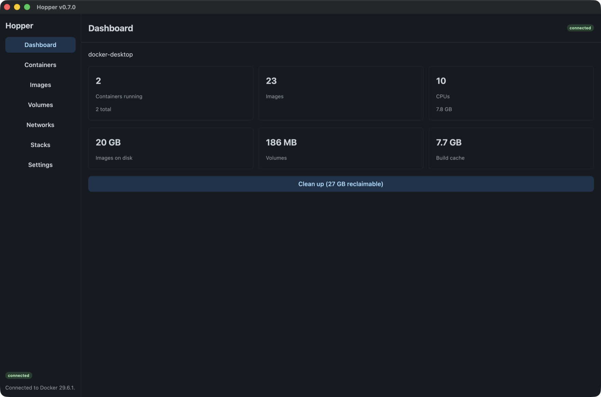
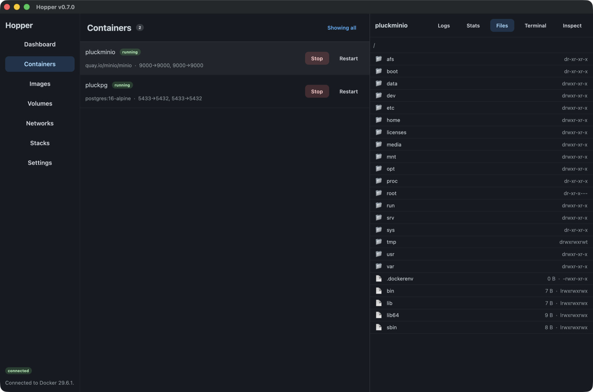
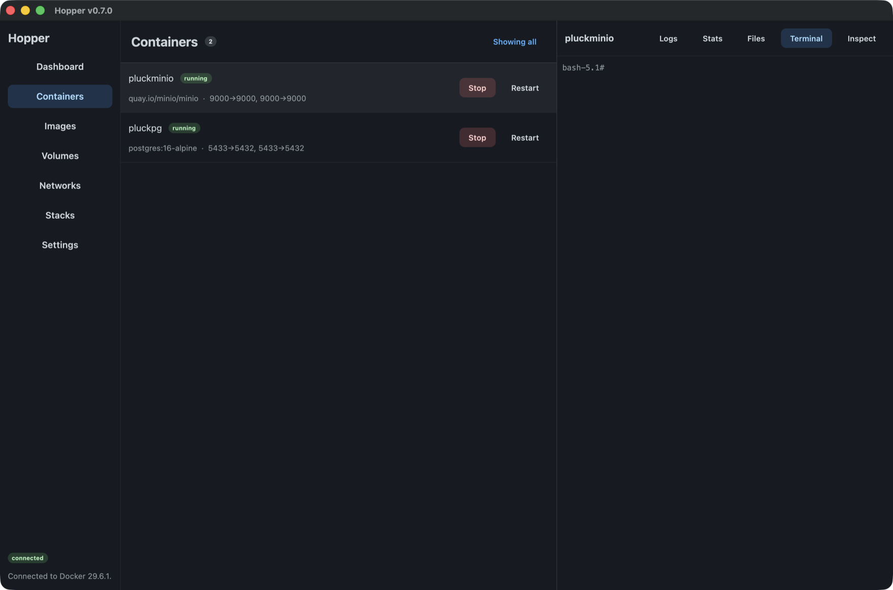
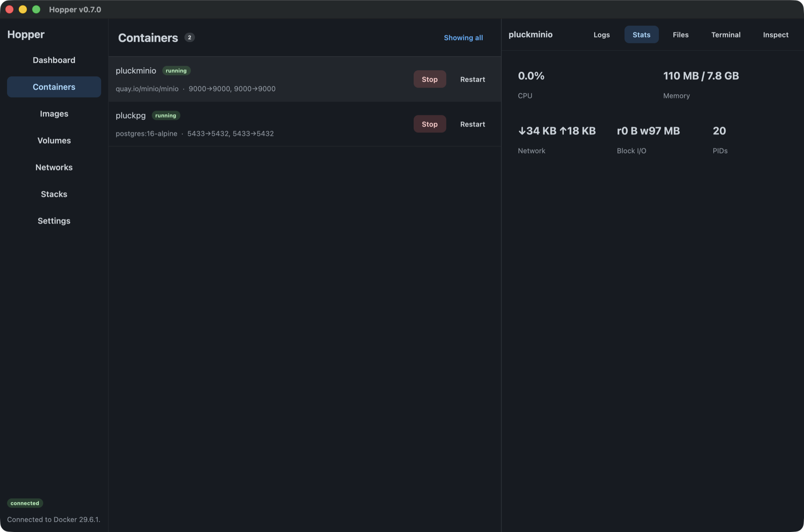

Native Rust · gpui + guise · Apple Containers
Docker,
without the Desktop.
On Apple silicon Macs running macOS 26 or later, Hopper runs your containers on Apple Containers, where every container is its own lightweight VM. Import from Docker brings your images across first.

The daily loop
Everything you reach for, rendered natively.
Containers, images, volumes, networks, and compose stacks. Apple Containers supports logs and inspect in the detail pane; Docker-compatible engines also offer stats, files, and an interactive shell.
Pull a file out of a container.
Browse a container's filesystem in a real tree — sizes, modes, symlinks — and copy files out. The operation you reach for daily, that no Docker GUI made simple.
How the detail pane works →
A shell that's actually a shell.
Interactive exec over a hijacked socket, with a real terminal model that interprets
escape sequences — top, vim, and colour render, not garble.

Live meters, not spinners.
CPU, memory (page-cache excluded, like Docker Desktop), network, block-IO, and PID counts stream in as fast as the daemon samples them.
Streaming internals →
The engine
Apple's runtime, driven properly.
macOS 26 ships a container runtime Apple maintains. Hopper installs it, starts it, and speaks to it — and is honest about the parts of Docker it does not have.
Installs it for you
If Apple's
containeris missing, Hopper fetches the package Apple signed and hands it to the system installer. Hopper never elevates.A VM per container
Stronger isolation than a shared kernel, and on macOS 26 containers reach each other by name across isolated networks.
Imports from Docker
Copies your images, networks and containers out of Docker Desktop, Colima or Rancher Desktop. Nothing is removed from the source.
Says what it cannot do
Apple's runtime has no pause, rename, restart policy or healthchecks. Hopper hides those rather than offering a button that fails.
# Apple's runtime has its own CLI, not a Docker Engine API socket $ container --version container CLI version 1.2.2 $ container system status --format json {"status":"running", ...}
Parity, and then some
A real replacement — not a viewer.
Build with BuildKit
Dockerfiles with --mount=cache, secrets, and --platform, plus honest .dockerignore negations.
Registries, signed in
Push and pull with keychain-stored credentials; authenticated pulls lift Hub rate limits.
Compose stacks
Reconstructed from labels — stacks appear with no CLI, and start and stop label-driven.
Migrate in
Scan Docker Desktop, Colima, or Rancher and copy images, volumes, and networks over.
MCP server
A stdio Model Context Protocol server exposes Docker tools to AI clients.
Ship it